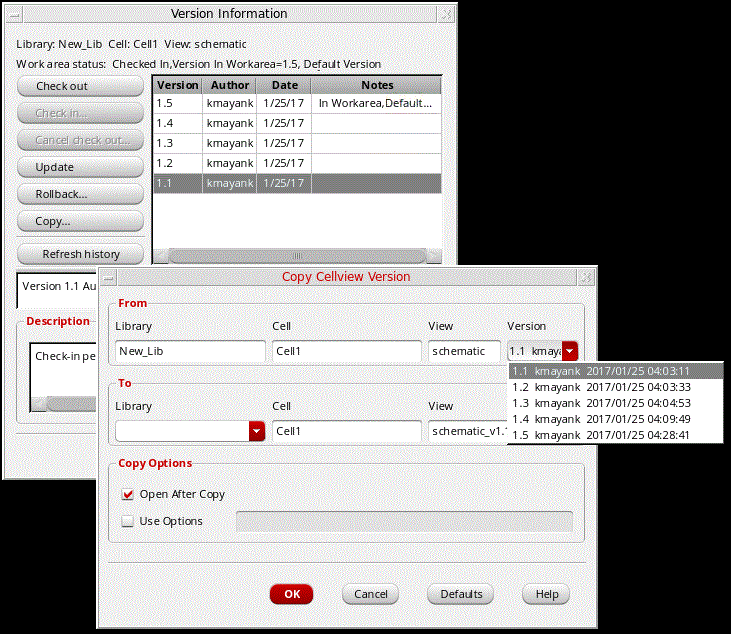

Copying a Version of a Cellview or File
The Copy Cellview Version form is used to copy or export a specific cellview version in the library database, primarily so that it can be viewed side-by-side with another (latest) version of the cellview that is currently being edited in Virtuoso.
You can also access this form directly by selecting Design Manager – Copy Version.
To copy a version of a cellview or file:
- Select a cellview that has been checked in.
-
Choose Design Manager — Version Info.
The Version Information form appears. - Select the version you want to copy.
-
Click Copy.
The Copy Cellview Version form appears.The name of the source Library, Cell, View, and Version number display in the fields of the From group box.
Some default information appears in the fields of the To group box. You can change any or all of the To values. The default destination view name is the original view name with the version number appended using the format originalViewName_v#. For example, schematic_v1.1. - Select the Lib/Cell/View version to be copied from the Version pull-down.
- In the Library drop-down field, in the To group box, type or select a destination library.
- (Optional) In the Copy Options group box, select the Open After Copy check box to open the copied cellview after the copy operation.
- (Optional) In the Copy Options group box, select the Use Options check box and type any copy options specific to your particular design management system you want to use.
- Click OK.
The software copies the cellview dependent upon the detailed rules.
Related Topics
Return to top